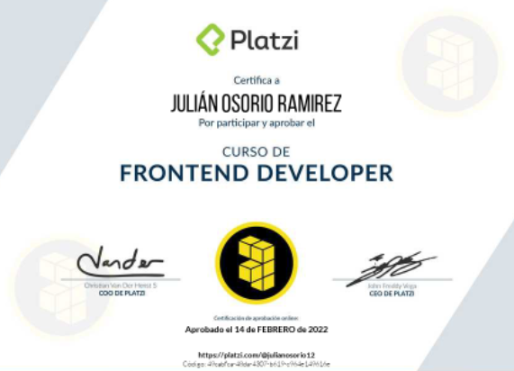
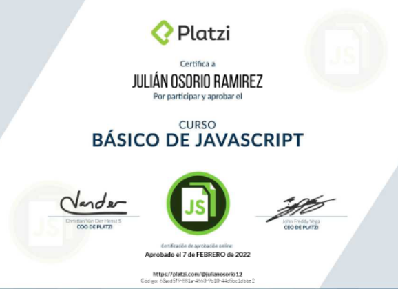
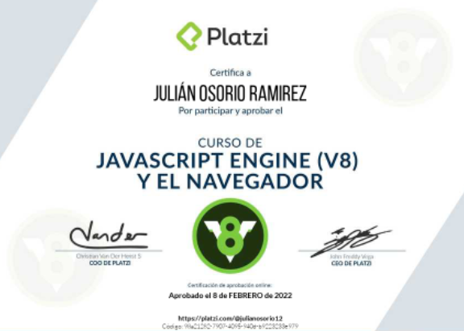

Curso Basico de Algoritmos pensamiendo Logico
Curso Basico de Algoritmos pensamiendo LogicoCurso Basico Frontend Developer
Curso Basico JavaScript
Curso Basico JavaScript Engine (8)
Curso Basico de Algoritmos pensamiendo LogicoMi vida como estudiante de programacion se dio gracias
a gusto y curiosidad por el mundo tecnologico,tanto Hardware
como Software siempre han captado mi atencion, Pero no fue
hasta que en la asignatura de tecnologia que se impartia en mi instituto
tuvimos una evaluacion relacionada con programacion basica.
Sorprendentemente fui de los pocos compañeros
a los cuales no les resulto especialmente complicado superar el tema y esto pico mas mi curiosidad hacerca de este
mundo.Años mas tarde poco a poco fui conociendo a personas que estaban en esta profecion o que estaban en proceso
de convertirse en programadores, y esto me llevo a irme informando cada vez mas hasta el punto de tomar la desicion
de dejar mi trabajo y empezar con este precioso camino que aunque lleno de dificultades
esta siendo un gran viaje hacia un futuro mejor.